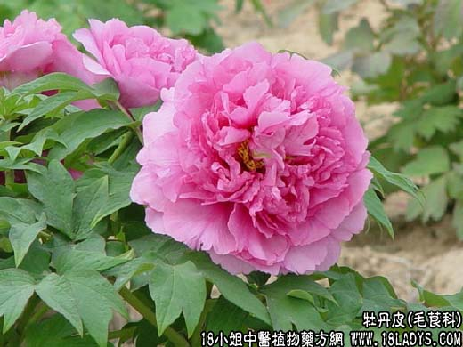

【中药概述】
牡丹皮为毛茛科小灌木植物牡丹的根皮。辛、苦、微寒。归心、肝、肾经。
1．清热凉血：用于温病热入血分，有清热凉血作用。常伍生地黄 赤芍等；病情重者加犀角，如（犀角地黄汤）。
2．清退虚热：用于温病后期，热入阴分，夜热早凉，热退无汗，或阴虚发热，骨蒸无汗之证，如（青蒿鳖甲汤）（<和剂局方>牡丹散）。
3．用于肝郁火旺的发热，头痛头晕、目赤颧红，及月经不调、经期提前、胁痛乳胀、或经前发热等证，如（丹栀逍遥散）。
4．活血散瘀：用于血热壅滞的痈疡肿毒及血瘀经闭、痛经、腹中包块，跌打损伤等证，如（桂枝茯苓丸）、（大黄牡丹汤）、（活血膏）、（<证治准绳>牡丹皮散）。
【药效鉴别】
丹皮清透血分伏火，凉血，故为疗无汗骨蒸之佳品。又为血中气药，入血分，能行气滞。一切血气为病，均可随症配伍。
【临证应用】
治疗阑尾炎：用复方大黄牡丹汤加减，每日1剂，分2次服完。
【药理作用】
水煎剂与丹皮酚对动物实验性高血压有降压作用。有镇静和催眠作用。
【化学成分】
含丹皮酚、牡丹酚甙、牡丹酚原甙、芍药甙、羟基芍药甙、苯甲芍药羟基芍药甙等。
【用量用法】
6——30g，水煎服，或入丸散剂。
【使用注意】
凡血寒、孕妇及月经过多者慎用。